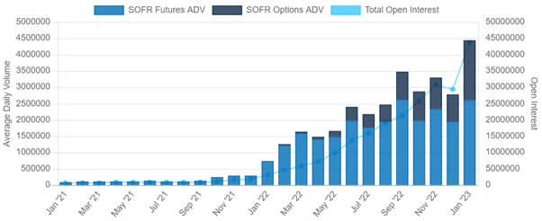
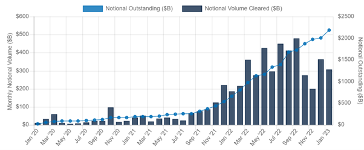
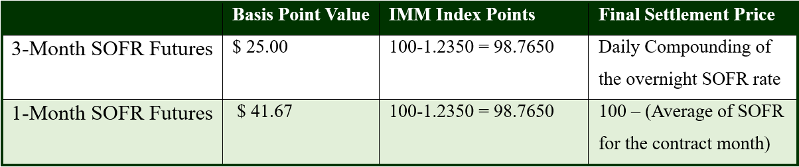
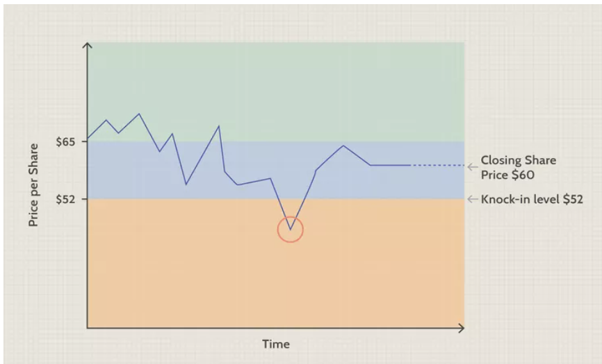

Abstract:
The essay discusses three different options of financial instruments: SOFR derivatives, Reverse Convertibles, and Green Bonds. The first option discusses trading SOFR Derivatives, which are futures contracts based on the Secured Overnight Financing Rate. The second option introduces Reverse Convertibles, a type of bond whose yields are linked to the performance of a single stock. Finally, Green Bonds are explored as a fixed-income investment that is specifically earmarked to raise money for climate and environmental projects. While these options differ in their structure and target audience, they all offer investors the opportunity to diversify their investment portfolios and potentially achieve higher returns.
Content:
- 3.1 Introduction
- 3.2 How are payouts determined?
- 3.3 Structures of payoff
- 3.4 Risks of RCNs
- 3.5 Targeting at what type of investor
- 4.1 Background
- 4.2 Definition of green bonds
- 4.3 The benefit of issuing green bonds for corporations
- 4.4 The benefit of buying green bonds for investors
- 4.5 The future of green bonds
1. Introduction
In recent years, the financial market has been evolving, and a new range of instruments have emerged. From Secured Overnight Financing Rate (SOFR) derivative, Reverse Convertibles, to Green Bonds, investors have been seeking innovative ways to invest and create new sources of revenue. SOFR Futures, for example, is considered a reliable indicator of market expectations of SOFR and has led to liquidity, margin savings, and easy spread trading against Eurodollar and Fed Fund futures. Reverse Convertibles (RCNs) are a type of bond whose yields are linked to the performance of a single stock and can be suitable for investors looking for predictable, higher-income streams than traditional fixed-income investments. Finally, Green Bonds are specifically earmarked to raise money for climate and environmental projects, and besides helping companies to gain a good reputation and enhance their green profile, they also provide incentives for investors to buy, such as risk diversification.
2. SOFR Derivative
2.1 SOFR Mechanism and Implication
Secured Overnight Financing Rate (SOFR) is a fully-transaction based, nearly risk-free reference rate, and being recognized by the S&P Global to be the “anchor money market reference rate”. Its main difference comparing to LIBOR is how the rates are produced. While LIBOR is based on panel bank input, SOFR is a broad measure of the cost of borrowing cash overnight collateralized by US.
SOFR is calculated as a transaction -volume-weighted median repo rate. Below are 2 mini versions of SOFR calculation example.
(1) Let's assume that for a 3-day period, not including weekends or holidays, SOFR rates are 1.00%, 1.20%, and 1.40%. The annualized rate is given by:
((1+1.00%*1/360)*(1+1.20%*1/360)*(1+1.40%*1/360)-1)*(360/3)*100% = 1.200039630%
(2) When a rate is over the weekend or a holiday, simple interest is calculated. For example, assume on a Friday, SOFR is 1.50%. This would cover three days of simple and not compounded interest, or:
(1+1.50/100*3/360)=1.000125000
Now let's assume there are 6 days in our contract period. The calculation would be as follows:
((1+1.00/100*1/360)*(1+1.2/100*1/360)*(1+1.40/100*1/360)*(1+1.50/100*3/360)-1)*(360/6)*100=1.350094818
2.2 SOFR Products Details
SOFR products are mostly traded via CME Group, the world's leading derivatives marketplace. In January 2023, they announced new milestones in the growth of SOFR derivatives contracts, with a single-day record of 7.6 million SOFR futures and options traded and record open interest of 35.7 million contracts on January 12.
Figure 1: SOFR Futures and Options ADV and OI
 Source: CME GroupLikewise, CME Cleared SOFR swaps volume was $306 billion notional in January 2023, and notional outstanding grew to $2.19 trillion, with SOFR-indexed trades represented 78% of the USD trades cleared at CME in January 2023.
Figure 2: CME Cleared SOFR Swaps
 Source: CME GroupSOFR Future contracts that CME Group lunches are mainly 3-month and 1-month contracts. 3-month SOFR Futures are consecutive quarterly contracts reflecting SOFR expectations between IMM dates, listings extend out 10 years, providing a term structure to fulfil risk management needs. 1-month SOFR Futures offers finer granularity for framing market expectations of future SOFR values over the nearest 13 calendar months.
Figure 3: Central Banks Gold Buy or Sell in Nov 2022
 Source: CME Group2.3 Charm of SOFR Product
There are many reasons why investors may trade SOFR Futures. First, Futures are a reliable indicator of market expectations of SOFR. Second, SOFR Futures lead liquidity, with 1 tick wide markets out 5 years. The tick refers to the minimum price fluctuation, or the smallest price increment in which the prices are quoted, which is 1/4 of a 1/32. This means that SOFR future has very small bid-ask spread. Third, its margin savings are higher (up to 80% comparing to 75% of those of Eurodollars and 75% of those of Fed Funds). Fourth, SOFR Futures has easy spread trading against Eurodollar and Fed Fund futures via CME Globex intercommodity spreads.
3. Reverse Convertibles
3.1 Introduction
Reverse Convertibles are a special type of bond whose yields are linked to the performance of a single stock. The offering yields usually fall within a high range, which can be as high as 25% or more. These notes are considered coupon-bearing investment instruments with payouts at maturity. Most maturities of reverse convertibles range from three months to one year. These notes are usually issued by large financial institutions. However, the companies whose stocks are linked to RCNs have no involvement in the products.
3.2 How are payouts determined?
RCNs can be divided into two parts: debt instrument and put option. Before maturity, RCNs pay out the stated coupon rate, usually as quarterly payments. This constant rate reflects the general volatility of the underlying stock, with greater potential volatility in the stock's performance, the more risk the investor takes. The higher the risk, the more value investor get for the put option; this translates into a higher coupon rate.
When the RCN matures, investors will receive either 100% of their original investment back or a predetermined number of the underlying stock's shares. This number is determined by dividing their original investment amount by the stock's initial price.
3.3 Structures of payoff
There are two structures used to determine whether they will receive their original investment amount or the stock:
Basic Structure: At maturity, if the stock closes at or above the initial price, the investor will receive 100% of their original investment amount. If the stock closes below the initial price, they'll get the predetermined number of shares. This means they'll end up with shares that are worth less than their original investment.
Knock-In Structure: If before maturity date, the stock price falls below the boundary level and the closing share price falls under the initial price, you'll still receive either 100% of your initial investment or shares of the underlying stock at maturity. With this structure, though, you'll also have some downside protection.
Figure 4: Know-in Structure
 Source: Investopedia3.4 Risks of RCNs
Call Provision: Some RCNs include a feature that could take RCN from investors just when it's kicking out terrific yields, and prevailing interest rates are low.
For small investors, reverse convertibles offer a high level of income for a low minimum initial investment. But investors typically don't participate in any gains in the underlying stock, and if the stock falls sharply, they can lose much of their investment.
3.5 Targeting at what type of investor
RCNs could be suitable for investors looking for predictable, higher-income streams than can be found on traditional fixed-income investments and can tolerate the risk of losing some of the principal.
Investors should only buy into RCNs when they believe that the underlying stock will not drop below the knock-in level.
4. Green Bonds
4.1 Background
In recent years, green bonds have been extremely popular in the market as more and more investors are starting to realize the importance of environment-related issues. Besides, issuing green bonds can increase the financing means of companies with strong environmental performance. This is also considered a bonus for accelerating sustainable transition for companies.
4.2 Definition of green bonds
A green bond is a type of fixed-income instrument that is specifically earmarked to raise money for climate and environmental projects. Specifically for the Chinese market, the Catalogue of Projects Supported by Green Bonds (2021), which was released in 2021, provides the first definition of green bonds. Green bonds are marketable securities that are issued in accordance with legal procedures and with agreed principal and interest repayment, including but not limited to green financial bonds, green corporate bonds, green corporate bonds, green debt financing instruments, and green asset-backed securities, and are used exclusively to support green industries, green projects or green economic activities that meet the prescribed conditions.
4.3 The benefits of issuing green bonds for corporations
There are many benefits for an issuer to issue green bonds:
• Highlights their green asset: By issuing green bonds, the issuer can show that their assets are well diversified and sustainable, thus gaining a good reputation from the investor
• “Green premium”: Through the issuance of green bonds, the issuers usually pay less to fund green bonds as the yield is lower. The issuer can enjoy a lower cost of debt by issuing more green bonds. As there exists a huge demand for green bonds, the investors are satisfied even if they receive less from those green bonds, which leads to a “green premium” in the green bonds.
• Enhance a green profile: By issuing green bonds to attract more ESG investors, companies can make their investor base more diversified. Gain a high potential of attracting more investors.
4.4 The benefit of buying green bonds for investors
There are also incentives for investors to buy green bonds
• Risk diversification: Green bonds can help mitigate climate-change-related risks in the portfolio due to changing policies. Instead, a green bond invests in climate-friendly assets, such as green buildings and renewable energy which bear lower credit risk overtime.
• Strong performance: As the companies issuing green bonds are generally large companies with a good reputation and ESG performance, green bonds have also performed very well in the market.
4.5 The future of green bonds
There is still a large capital gap for achieving carbon peaking, which needs to be compensated in the form of market-based financing. "For the realization of carbon peak and carbon neutral capital needs, there are a lot of calculations, to achieve carbon peak and carbon neutral capital needs of the scale level is a trillion RMB", this level of huge investment government funds can only cover a small part of the gap to rely on market capital to make up for the market-oriented approach, to guide the financial system to provide the required investment and necessary financing support needed.
The greenness of domestic green bonds will be further enhanced, and the earlier they are issued, the more they can enjoy the current relatively relaxed policy support environment. The level of the greenness of green bonds is important to attract socially responsible domestic and foreign investors, and also has a greater impact on the reputation mechanism. At present, the standards of domestic green projects have been unified and are basically in line with international standards, but the greenness of domestic green bonds needs to be improved, including two points: first, a larger proportion of the funds raised from bonds should be used for green projects; second, the certification and evaluation system, information disclosure system and duration management of green bonds need to continue to be strengthened.